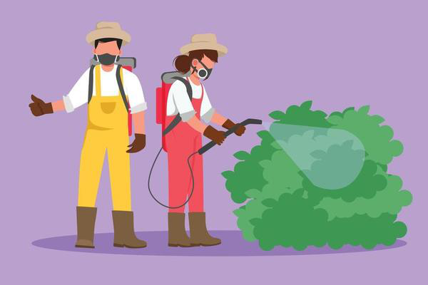

"Revolutionary AI Engine: Detect Diseases in Fruits and Veggies Instantly!"
This cutting-edge AI technology is designed to quickly and accurately identify diseases in a wide variety of fruits and vegetables, ensuring healthier produce and better yields.
Say goodbye to guesswork and hello to smarter farming and food quality!